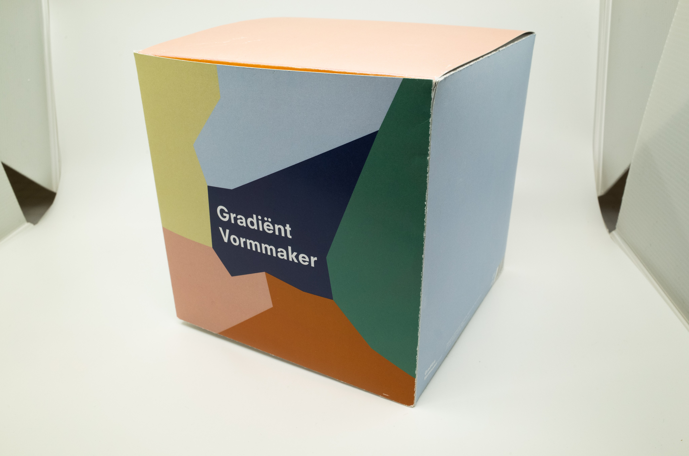
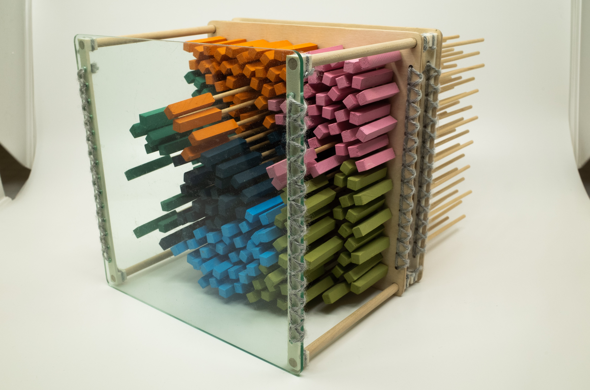
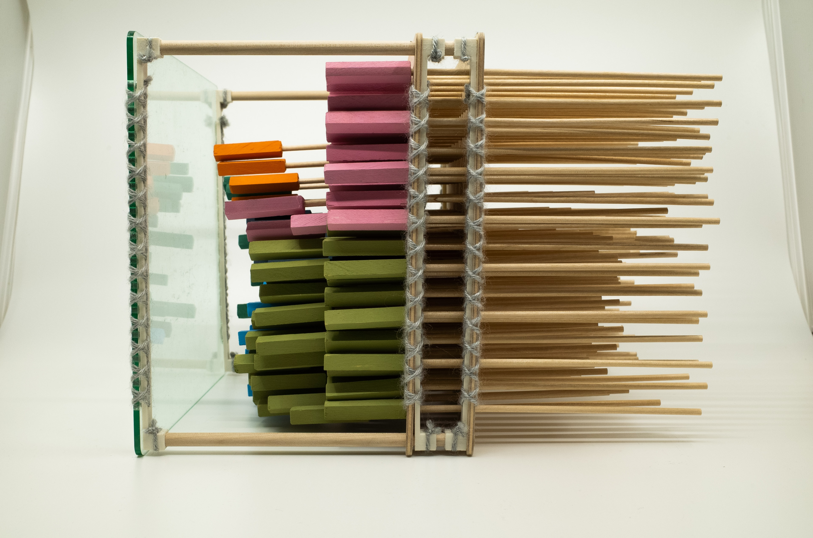
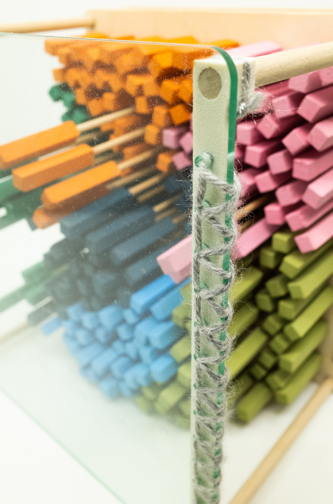

A game for 1 - 4 players. Players draw a card with a pattern on it and attempt to recreate it by pushing the coloured sticks toward the plastic shield. Depending on the light of the room and the distance each coloured stick is pushed out, players will get a unique abstract pattern. Players can also create original patterns not featured on cards. Gradient Vormmaker comes packaged inside of a cardstock box with a number of various pattern template cards and instructions.
   